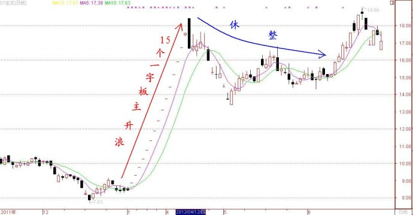

第196篇•教你炒股系列52:主升浪的形态（3）
谷为陵
1、连续涨停板型主升浪
所谓连续涨停板型，是指股价以连续5～6个以上的涨停板方式暴涨的主升浪，其中，它又可以分为三种类型：一是连续“一字板”涨停型，二是连续2～3个“一字板”再加2～3个高开大阳线涨停板，三是连续5～6个以上大阳线涨停板型。
（1）连续“一字板”涨停型
连续“一字板”涨停型主升浪，是指股价能够连续在5～6个以上的交易日里，一开盘就封死涨停板，所有的成交均是在涨停板上成交，且全天无法打开涨停板，从而形成连续的“一字板”涨停型的K线组合形态。毫无疑问，连续“一字板”涨停型主升浪是所有主升浪中涨势最强的形态。
那么，连续“一字板”涨停型主升浪是怎么形成的呢？
从表面看，连续“一字板”涨停型主升浪的形成是由巨量买盘追高造成的，在涨停板上排队的巨大买盘有将卖盘全部吃光的气概。由于涨停板上的买盘巨大，在前3～4个涨停板时，卖盘会被吓跑，从而导致在涨停板上成交稀少，形成无量空涨之态。
但实质上，连续“一字板”涨停型主升浪形成的真正原因，是个股突发性的特大利好造成的。利好主要有两类：一是重大资产重组，二是重大资产注入。但不管是资产重组还是资产注入，所重组或者注入的资产必须是属于股市当下最热门概念的资产，或者是能够给上市公司能够带来巨大的现实利润的资产。
我下面举几个案例：
案例1：注入热门券商概念资产——中山公用（000685）
在2007年8月，正是券商概念股最为疯狂之时，主流的券商概念股股价都在50元以上，龙头股中信证券的股价更是一度达到了118元。恰在那个时候，中山公用也赶来凑热闹，其大股东拟将广发证券的股权注入到该股，于是该股股价就立即暴涨，走出了连续14个“一字板”的、一浪到顶型的主升浪！
案例2：注入热门银矿概念资产——科学城（000975）
今年5月，科学城因大股东以增发方式注入玉龙矿业所属的5700吨白银矿，使得股价出现暴涨，走出了7个“一字板”主升浪，几乎是一浪到顶。
案例3：注入热门金矿概念资产——ST宝龙（600988）
今年3月20日，ST宝龙发布公告称，拟以8．68元／股的底价向赵美光及其一致行动人赵桂香、赵桂媛等8位自然人定向发行1．83亿股股份收购吉隆矿业100%股权，从而形成重大资产重组，在重组完成后，该股将成为正宗的黄金股。于是，该股股价随后出现暴涨，连续走出了15个涨幅为5%的一字板主升浪，恰是一浪到顶。

（未完待续）